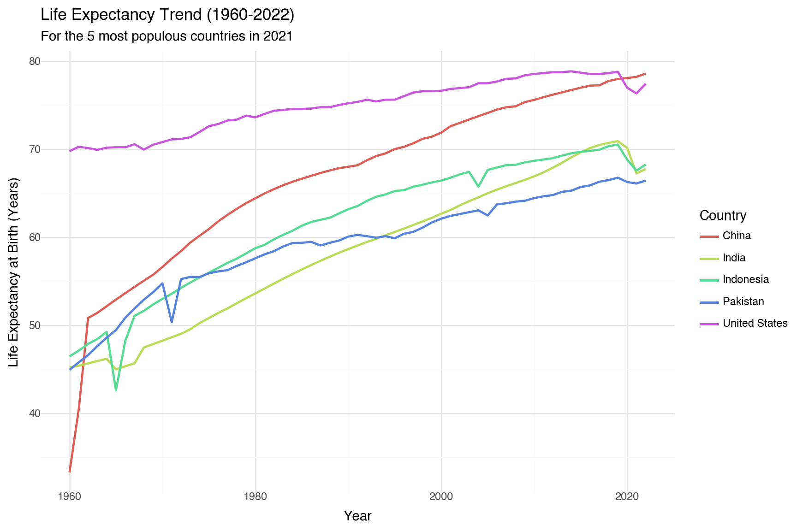
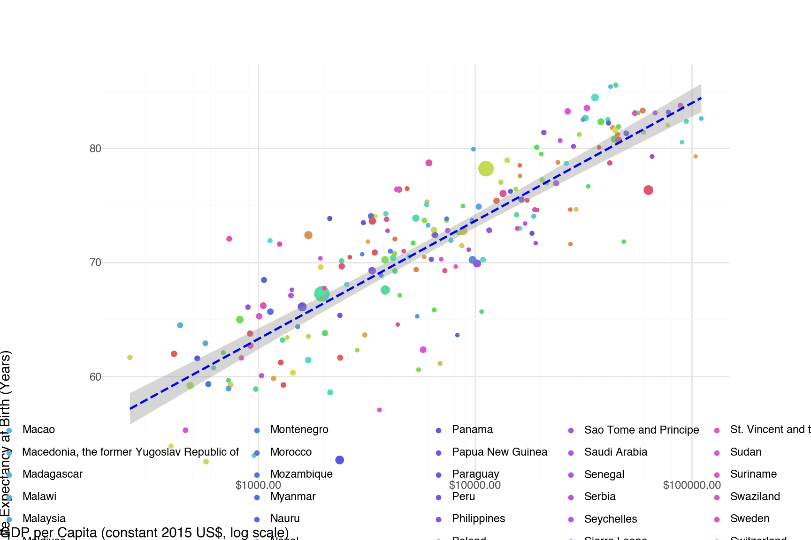
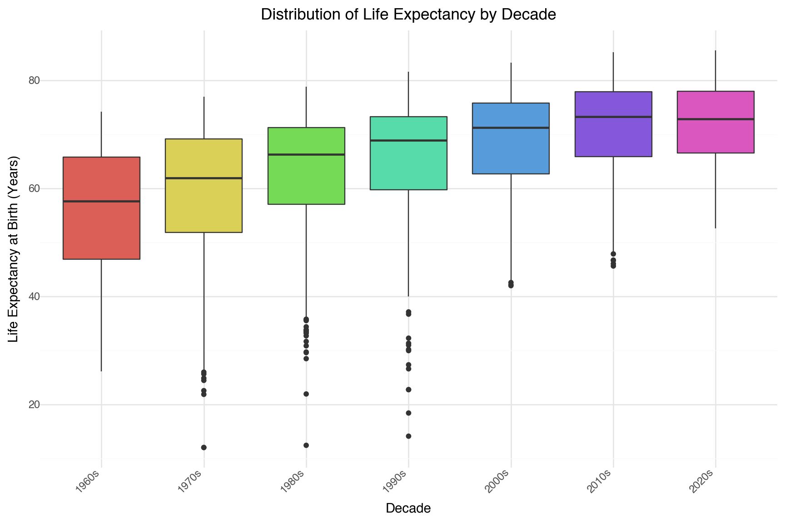

Exploring Global Development Trends: Insights from UNICEF Data
Author
Kshitij Bhilare
Published
April 23, 2025
Introduction
UNICEF collects vast amounts of data on the situation of children and development worldwide. By analyzing key indicators, we can gain insights into global progress, persistent challenges, and disparities across nations. This document visualizes data from two UNICEF datasets: one containing broad country-level metadata and another focusing on a specific health indicator. Our goal is to explore trends in life expectancy, economic factors, health services, and population dynamics.
Code
import pandas as pdimport geopandas as gpdfrom plotnine import ( ggplot, aes, geom_line, geom_point, geom_histogram, geom_boxplot, geom_map, labs, theme_minimal, scale_x_log10, scale_y_log10, scale_color_discrete, theme, element_text, scale_fill_gradient, theme_void, geom_smooth)from mizani.formatters import currency_format, percent_formatimport warningsMETADATA_CSV_PATH ="UNICEF Metadata.csv"INDICATOR_CSV_PATH ="UNICEF_Indicator_1_cleaned.csv"SHAPEFILE_PATH ='Natural Earth Countries 10m'warnings.filterwarnings('ignore', message='The figure layout has changed to tight')try: metadata_df = pd.read_csv(METADATA_CSV_PATH) indicator_df = pd.read_csv(INDICATOR_CSV_PATH) cols_to_numeric_meta = ['year', 'Population, total', 'GDP per capita (constant 2015 US$)','Life expectancy at birth, total (years)', 'Birth rate, crude (per 1,000 people)' ]for col in cols_to_numeric_meta: metadata_df[col] = pd.to_numeric(metadata_df[col], errors='coerce') cols_to_numeric_indicator = ['year', 'obs_value']for col in cols_to_numeric_indicator: indicator_df[col] = pd.to_numeric(indicator_df[col], errors='coerce')exceptFileNotFoundErroras e:print(f"Error loading initial CSV files: {e}")print("Please ensure '{METADATA_CSV_PATH}' and '{INDICATOR_CSV_PATH}' are present.") exit() # Exit if essential data isn't foundexceptExceptionas e:print(f"An error occurred during data loading: {e}") exit()
Life Expectancy Trend
Life expectancy at birth is a fundamental indicator of a nation’s overall health and socio-economic development. How has this crucial metric evolved over the past six decades, particularly in the five most populous countries as of 2021? The following plot tracks these trends from 1960 to 2022
Code
try: top_5_countries = metadata_df[metadata_df['year'] ==2021].nlargest(5, 'Population, total')['country'].tolist() plot1_df = metadata_df[ (metadata_df['country'].isin(top_5_countries)) & (metadata_df['year'] >=1960) & (metadata_df['year'] <=2022) ].dropna(subset=['year', 'Life expectancy at birth, total (years)', 'country']) plot1 = ( ggplot(plot1_df, aes(x='year', y='Life expectancy at birth, total (years)', color='country')) + geom_line(size=1) + labs(title="Life Expectancy Trend (1960-2022)", subtitle="For the 5 most populous countries in 2021", x="Year", y="Life Expectancy at Birth (Years)", color="Country") + theme_minimal() + theme(figure_size=(9, 6)) ) plot1.save("plot1_life_expectancy_trend.png", dpi=300) plot1.show()exceptExceptionas e:print(f"Error generating Plot 1: {e}")

GDP vs. Life Expectancy
It’s often assumed that greater economic prosperity leads to better health outcomes and longer lives. Let’s investigate this relationship by plotting GDP per capita against life expectancy for countries in 2021. We use a logarithmic scale for GDP per capita due to the wide range of values across nations. The size of each point represents the country’s population.
Code
try:print("\nGenerating Plot 2: GDP vs Life Expectancy with Regression Line...") plot2_df = metadata_df[metadata_df['year'] ==2021].dropna( subset=['GDP per capita (constant 2015 US$)', 'Life expectancy at birth, total (years)', 'Population, total'] )ifnot plot2_df.empty: plot2 = ( ggplot(plot2_df, aes(x='GDP per capita (constant 2015 US$)', y='Life expectancy at birth, total (years)')) +# Scatter points (color removed, size retained) geom_point(aes(size='Population, total', color='country'), alpha=1, na_rm=True) +# Add the smoothing line (linear model 'lm' in this case) geom_smooth(method='lm', se=True, color='blue', linetype='dashed') +# <- Added this line# Log scale for X axis scale_x_log10(labels=currency_format(prefix="$")) + labs( title="GDP per Capita vs. Life Expectancy (2021)", subtitle="with Linear Regression Line", # Added subtitle detail x="GDP per Capita (constant 2015 US$, log scale)", y="Life Expectancy at Birth (Years)", size="Population"# Legend for size ) + theme_minimal() + theme(figure_size=(9, 6)) ) plot2.save("plot2_gdp_vs_life_expectancy_regression.png", dpi=300) plot2.show() # Use print(plot2) in Quarto/Jupyterprint(plot2) # Display plot in Quarto outputprint("Plot 2 (with regression) saved as plot2_gdp_vs_life_expectancy_regression.png")else:print("No data available for Plot 2.")exceptExceptionas e:print(f"Error generating Plot 2: {e}")
Generating Plot 2: GDP vs Life Expectancy with Regression Line...

<ggplot: (864 x 576)>
Plot 2 (with regression) saved as plot2_gdp_vs_life_expectancy_regression.png
The plot generally shows a positive correlation: countries with higher GDP per capita tend to have higher life expectancy. However, there’s considerable variation, suggesting other factors are also at play.
Healthcare Sanitation Trend
Access to basic services is crucial for public health. One specific indicator tracks the proportion of healthcare facilities without basic sanitation services. Improvements here are vital for preventing infections and ensuring safe patient care. Let’s examine the trend for a few selected countries where data is available.
This plot highlights the different trajectories and levels of access to this basic but essential service in the selected countries. Note the use of a logarithmic scale on the y-axis to better visualize changes, especially when starting from high proportions.
Birth Rate Distribution
Population dynamics are significantly influenced by birth rates. Understanding how crude birth rates (per 1,000 people) vary across the globe provides insight into demographic structures and potential future trends. The histogram below shows the distribution of these rates across countries in 2021.
The histogram reveals the spread of birth rates, with most countries clustering within a certain range, but also showing the existence of countries with significantly higher or lower rates.
Life Expectancy Distribution by Decade (Box Plot)
We saw the trend for specific countries earlier. Now, let’s look at the bigger picture: how has the overall distribution of life expectancy across all countries changed from the 1960s to the 2020s? Box plots are ideal for visualizing these changes in median, spread (interquartile range), and outliers for each decade.
Code
try:# Prepare data for plot 5 - requires 'decade' column plot5_df = metadata_df.dropna(subset=['year', 'Life expectancy at birth, total (years)']).copy() plot5_df['decade'] = (plot5_df['year'] //10*10).astype(int).astype(str) +'s' plot5 = ( ggplot(plot5_df, aes(x='decade', y='Life expectancy at birth, total (years)', fill='decade')) + geom_boxplot(show_legend=False) + labs(title="Distribution of Life Expectancy by Decade", x="Decade", y="Life Expectancy at Birth (Years)") + theme_minimal() + theme(figure_size=(9, 6), axis_text_x=element_text(angle=45, hjust=1)) ) plot5.save("plot5_life_expectancy_decades_boxplot.png", dpi=300) plot5.show()exceptExceptionas e:print(f"Error generating Plot 5: {e}")

These box plots clearly illustrate the general upward shift in global life expectancy over the decades, as well as changes in the variation between countries.
Map Plot (Life Expectancy 2021)
Finally, let’s visualize the geographical distribution of life expectancy in a recent year (2021). This map uses color intensity to represent the life expectancy at birth for each country, providing a spatial perspective on global disparities and achievements.
Code
YEAR_TO_PLOT_MAP =2021VARIABLE_TO_PLOT_MAP ='Life expectancy at birth, total (years)'try: world_map = gpd.read_file(SHAPEFILE_PATH) world_map = world_map[['ADMIN', 'geometry']]# 2. Prepare UNICEF Data for Map data_to_plot_map = metadata_df[metadata_df['year'] == YEAR_TO_PLOT_MAP].dropna(subset=[VARIABLE_TO_PLOT_MAP]) data_to_plot_map = data_to_plot_map[['country', VARIABLE_TO_PLOT_MAP]]# 3. Merge Geospatial and UNICEF Data merged_map_data = world_map.merge(data_to_plot_map, left_on='ADMIN', right_on='country', how='left') matched_countries = merged_map_data[VARIABLE_TO_PLOT_MAP].notna().sum()if matched_countries <len(data_to_plot_map) /2:print("Warning: Low merge success rate. Check country name matching between shapefile ('ADMIN') and CSV ('country').")# 4. Create Map Plot map_plot = ( ggplot(merged_map_data) + geom_map(aes(fill=VARIABLE_TO_PLOT_MAP), color="gray", size=0.5) + scale_fill_gradient(low="lightyellow", high="darkred", na_value="lightgrey") +# Example gradient labs(title=f"{VARIABLE_TO_PLOT_MAP} ({YEAR_TO_PLOT_MAP})", fill=VARIABLE_TO_PLOT_MAP.replace('_', ' ').title()) + theme_void() + theme(figure_size=(12, 8)) # Adjusted size )# 5. Save Map Plot output_filename =f"plot6_map_{VARIABLE_TO_PLOT_MAP.replace(' ', '_').lower()}_{YEAR_TO_PLOT_MAP}.png" map_plot.save(output_filename, dpi=300) map_plot.show()exceptFileNotFoundError:print(f"Error: Shapefile not found at '{SHAPEFILE_PATH}'.")print("Please download the Natural Earth Admin 0 countries shapefile, unzip it,")print("and update the SHAPEFILE_PATH variable in the script to the correct .shp file path.")exceptImportError:print("Error: Missing library. Please install geopandas: pip install geopandas")exceptKeyErroras e:print(f"Error: Column not found during map generation. Missing key: {e}")print("This often happens if the shapefile column name ('ADMIN' assumed here) or")print("the CSV column name ('country' assumed here) used for merging is incorrect.")print("Inspect world_map.columns and metadata_df.columns.")exceptExceptionas e:print(f"An error occurred during map generation: {e}")